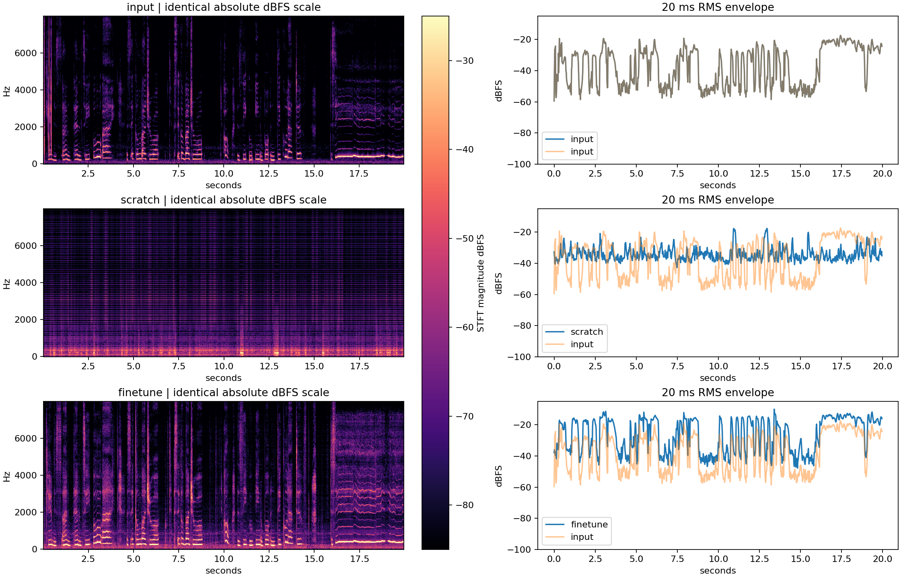

AI FUNDAMENTAL / VOICE LAB
听见训练的结果
同一套本人清唱录音，两种初始化方式，各完成 1000 次真实更新。先听匿名输出，再看模型身份。
2026-10-03 音质反馈
用户试听反馈：X 有滋滋噪声，Y 有多声部叠音感。两个产物尚未通过音质验收。
代码与波形审计未发现包装器叠轨；匿名 X 把已有输出放大约 9.32 dB。基频保留不等于自然度。下一轮将用预训练模型处理同一录音做对照，并检查清浊音条件。
下方新增诊断图；原始 WAV 保持不变。播放器互斥用于避免页面同时播放多条声音，不能据此断言它是听感缺陷的根因。
新的参考条件探索
新小样目标为Linda Johnson，不是Adele；清唱试转与插值音质未验收，网页只播现有WAV。
怎样体验
- 点三角形播放原声、X、Y。用耳机，保持同一音量；开始播放一个控件时，其它音频会自动暂停。
- 比较自然度、歌词清晰度、像不像本人、音高稳定性，各记 1–5 分。
- 保存评分后，展开下面的身份与原始输出。
揭晓身份与 A/B 原始输出
查看 X/Y 对应关系。匿名输出做了近似 RMS 匹配；以下保留原始输出响度。
下载 A 模型下载 B 模型.pth 是模型，不能直接播放。完整结果包包含快照、声音、原始训练日志和教程。
这次实际测到了什么
| 指标 | A：随机 G/D | B：微调 G/D |
|---|---|---|
| 真实更新数 | 1000 | 1000 |
| 训练耗时（含初始化与保存） | 320.70 秒 | 313.83 秒 |
| 此片段估计音高误差中位数 | 3050 cent | 0 cent |
| 有声 / 无声不一致率 | 50.38% | 8.48% |
本片段 B 的估计音高保留更好；尚未收集盲听评分，没有自然度或音色质量胜者。0 cent 是离散音高估计的中位数，不代表真实误差为零。
两组共享冻结的预训练 HuBERT / RMVPE，因此 A 只称为转换 G/D 随机初始化。约六分钟、一位歌者、一个种子、一个固定测试片段的重建实验，不能验证跨歌者能力。

GAN loss 是训练目标，不是听感评分。
查看原声、A/B 的频谱与停顿残留诊断
